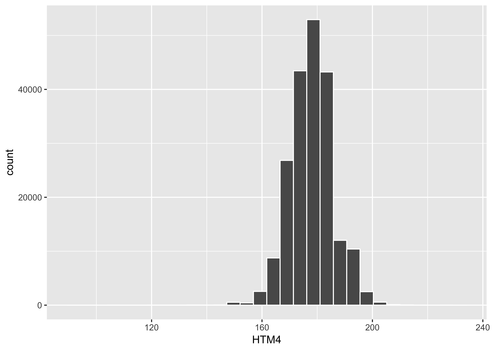
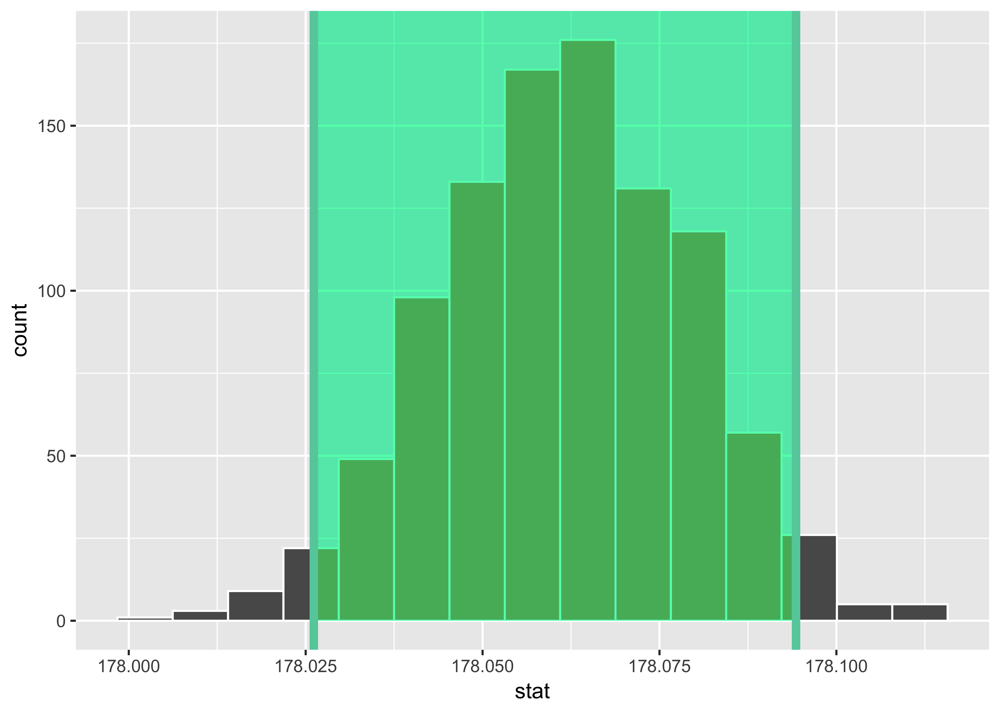
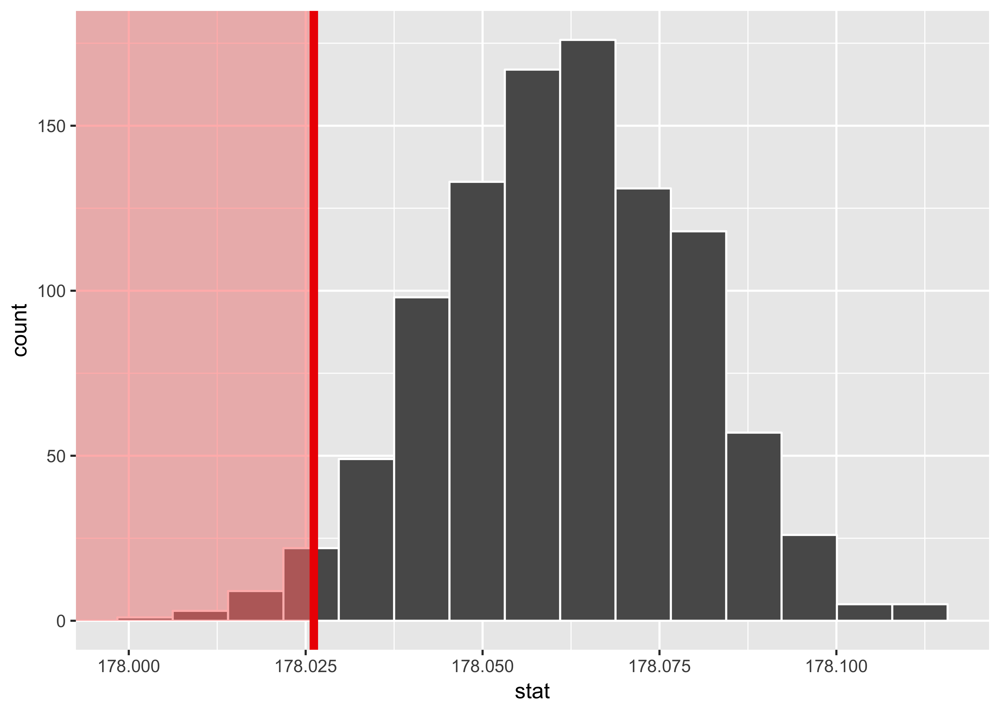
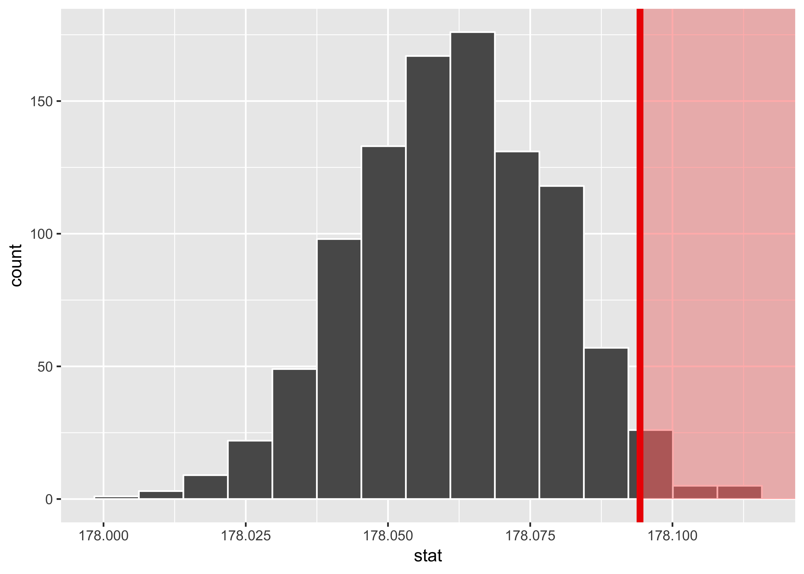

CONJ620: CM 3.3
Resampling-based hypothesis testing
Alison Hill
1 Overview
- A complete knitted
htmlfile is due on Sakai by beginning of class Thursday August 16th (2:30pm). - This lab is based on the assigned ModernDive readings. Please open and follow closely!
- You’ll need to load these packages to do the lab (make sure they are installed first, not in your .Rmd file!):
library(infer)
library(tidyverse)
library(skimr)
library(okcupiddata)
options(pillar.sigfig = 6) # you need to set this at the top of your Rmd4 Review Previous Lab
In our last lab, we used data to estimate the average height of males in the US. The sample data was from the CDC’s 2016 Behavioral Risk Factor Surveillance System (BRFSS):
“The Behavioral Risk Factor Surveillance System (BRFSS) is the nation’s premier system of health-related telephone surveys that collect state data about U.S. residents regarding their health-related risk behaviors, chronic health conditions, and use of preventive services.”
We started by reading in the data:
male_heights <- read_csv("https://raw.githubusercontent.com/apreshill/ohsu-basic-stats/master/data/male_heights.csv")Then we estimated the mean and sd of US male heights using sample statistics.
ggplot(male_heights, aes(x = HTM4)) +
geom_histogram(color = "white")
skim(male_heights)Skim summary statistics
n obs: 204509
n variables: 4
── Variable type:integer ──────────────────────────────────────────────────────────────────────────────────────
variable missing complete n mean sd p0 p25 p50
HTM4 0 204509 204509 178.06 7.79 91 173 178
id_num 0 204509 204509 1e+05 59036.81 1 51128 1e+05
WTKG3 2970 201539 204509 8993.52 1930.56 2268 7711 8618
p75 p100 hist
183 231 ▁▁▁▁▇▇▁▁
153382 2e+05 ▇▇▇▇▇▇▇▇
9979 27216 ▁▇▇▁▁▁▁▁
── Variable type:numeric ──────────────────────────────────────────────────────────────────────────────────────
variable missing complete n mean sd p0 p25 p50 p75
_LLCPWT 0 204509 204509 581.91 1013.13 0.8 102.05 252.75 631.23
p100 hist
28708.95 ▇▁▁▁▁▁▁▁x_bar1 <- male_heights %>%
summarize(stat = mean(HTM4))
x_bar1# A tibble: 1 x 1
stat
<dbl>
1 178.061Next, we quantified the precision of our estimate of the mean using bootstrapping to simulate the sampling distribution of the sample mean. Recall that sampling distributions are a specific kind of distribution: distributions of point estimates/sample statistics based on samples of size \(n\) used to estimate an unknown population parameter. Here is some sample code:
set.seed(1701)
mh_means <- male_heights %>%
specify(response = HTM4) %>%
generate(reps = 1000, type = "bootstrap") %>%
calculate(stat = "mean")Bootstrapping the sampling distribution helps us describe how values of the sample mean of heights \(\widehat{\mu}\) will vary from sample to sample due to sampling variability and thus identify “typical” and “atypical” values of \(\widehat{\mu}\).
mh_means %>%
summarize(mean_of_means = mean(stat))# A tibble: 1 x 1
mean_of_means
<dbl>
1 178.062(percentile_ci1 <- mh_means %>%
get_ci())# A tibble: 1 x 2
`2.5%` `97.5%`
<dbl> <dbl>
1 178.026 178.094mh_means %>%
visualize(endpoints = percentile_ci1, direction = "between")
In fact, we could use dplyr to count exactly how many bootstrapped means fall outside of the 95% confidence interval (the green shaded region bounded by the two green lines). Counting the number of bootstrapped means shows that we have exactly \(25/1000 = .025\) samples below the lower bound (2.5%) CI (now shaded in red).
mh_means %>%
visualize(obs_stat = pull(percentile_ci1[1]), direction = "less")
mh_means %>%
count(stat < pull(percentile_ci1[1]))# A tibble: 2 x 2
`stat < pull(percentile_ci1[1])` n
<lgl> <int>
1 FALSE 975
2 TRUE 25We also count exactly \(25/1000 = .025\) samples above the upper bound (97.5%) CI.
mh_means %>%
visualize(obs_stat = pull(percentile_ci1[2]), direction = "greater")
mh_means %>%
count(stat > pull(percentile_ci1[2]))# A tibble: 2 x 2
`stat > pull(percentile_ci1[2])` n
<lgl> <int>
1 FALSE 975
2 TRUE 25percentile_ci1# A tibble: 1 x 2
`2.5%` `97.5%`
<dbl> <dbl>
1 178.026 178.094So, our original sample mean was 178.06. We used bootstrapping to quantify the precision of that sample estimate. Finally, we used infer::get_ci(type = "percentile") to calculate the range of “stats” (here, sample means) that encompasses 95% of the bootstrapped samples- exactly 5% of our bootstrapped samples produce means that fall outside of this range.
5 Key Questions (⏰ 20 min)
Referring to the BRFSS data analyzed in above, answer the following questions:
- Population: Who is the population of interest that we want to say something about?
- What is the population parameter of interest?
- Census: What would a census be in this case?
- Sampling: How do you acquire the sample of size \(n\) observations? What is the sample size \(n\)?
- Point estimates/sample statistics: What is the summary statistic based on the sample of size \(n\) that estimates the unknown population parameter?
- Representative sampling: Is the sample procedure representative? In other words, do you believe the resulting samples “look like” the population?
- Random sampling: Was the sampling random?
- Follow-up question: if you took another sample using the exact same methods, do you think you would get the exact same sample statistic?
- Where is the sampling distribution centered?
- What is the spread of this sampling distribution?
- Complete these two sentences:
Assuming that this sample is representative of all males in the US, we are 95% confident that the average height for males in the US is between —- and —- centimeters.
Assuming that this sample is representative of all males in the US, if we were to collect 1,000 random samples using the exact same sampling method, in 95% of those samples (i.e., 950 out of 1,000), the average height for males in the US would be between —- and —- centimeters.
6 “OKCupid” sample
In this lab, you’ll use a second different sample to estimate the average height of US males. This sample was taken from male volunteer users of the dating website “OKCupid” living in the San Francisco area. Heights are self-reported in inches. Use the code provided to load the profiles from the okcupiddata R package. This code filters for all males, converts height to centimeters, drops missing values, and take a random sample of \(n\) = 45 observations.
library(okcupiddata)
set.seed(2018)
cupid <- profiles %>%
filter(sex == "m") %>%
mutate(height = 2.54*height) %>%
drop_na(height) %>%
sample_n(45) %>%
select(height) %>%
remove_rownames()7 Bootstrapping for hypothesis test (⏰ 20 min)
Follow along in ModernDive, Appendix B.2.4.
Using the “OKCupid” sample data described above, we’ll use bootstrapping to evaluate the following competing hypotheses:
7.1 In words
Null hypothesis: The mean height for all US men is equal to 178.06 cm.
Alternative hypothesis: The mean height for all US men is greater than 178.06 cm.
7.2 In symbols (with annotations)
- \(H_0: \mu = \mu_{0}\), where \(\mu\) represents the mean height for all US men and \(\mu_0\) is 178.06.
- \(H_A: \mu > 178.06\)
Think: if the population mean were 178.06, how surprised would I be to get a sample mean as or more extreme than the one I got?
stat
1 179.77567.3 The bootstrap approach
In order to look to see if the observed sample mean of 179.78 is statistically greater than \(\mu_0 = 178.06\), we need to account for the sample size. We also need to determine a process that replicates how the original sample of size 45 was selected.
We can use the idea of bootstrapping to simulate the population from which the sample came and then generate samples from that simulated population to account for sampling variability. Recall how bootstrapping would apply in this context:
- Sample with replacement from our original sample of 45 men and repeat this process 1,000 times,
- Calculate the mean for each of the 1,000 bootstrap samples created in Step 1.,
- Combine all of these bootstrap statistics calculated in Step 2 into a
boot_distnobject, and - Shift the center of this distribution over to the null value of 178.06. (This is needed since it will be centered at 179.7755556 via the process of bootstrapping.)
- Use this distribution to observe our \(p\)-value. Recall this is a right-tailed test so we will be looking for values that are greater than or equal to 179.7755556 for our \(p\)-value.
8 Bootstrapping for a confidence interval (⏰ 20 min)
Follow along in ModernDive, Appendix B.2.4.
- Create a confidence interval for the unknown population parameter \(\mu\) using our “OKCupid” sample data using bootstrapping.
- Note that we don’t need to shift this distribution since we want the center of our confidence interval to be our point estimate \(\bar{x}_{obs} = 179.78\).
- Is 178.06 is contained in this confidence interval as a plausible value of \(\mu\) (the unknown population mean)?
- Is the entire interval larger than 178.06?
- Does this match with our hypothesis test results of rejecting the null hypothesis in favor of the alternative (\(\mu > 178.06\))?
- Complete this sentence:
We are 95% confident the true mean mean height for all US men is between —- and —- centimeters.
9 Two means (independent samples) (on your own)
Follow along with ModernDive Appendix B.5.
Use this kaggle dataset, and do a two-sample t-test to test whether there is a difference in mean heights between men on the “OKCupid” dating site, versus all our POTUSes. I saved the dataset locally, then did the following:
pres <- read_csv(here::here("data", "president_heights_new.csv")) %>%
select(height = `height(cm)`)
cupid_pres <- cupid %>%
bind_rows(pres, .id = "sample") %>%
mutate(sample = as.factor(sample))9.1 BONUS
In the last class, a student asked (paraphrasing here):
“I don’t understand why you would bootstrap- once you have your sample mean there is no variability. Why would you resample when you already know your sample mean?”
Answer this question! Each TA will pick the top answer from their batch of labs. Those 3 students will get a “plus” added to this lab (or if you already got a check plus on this lab, it will be applied to a “check” lab from earlier in the quarter). We’ll share the best answers in class!